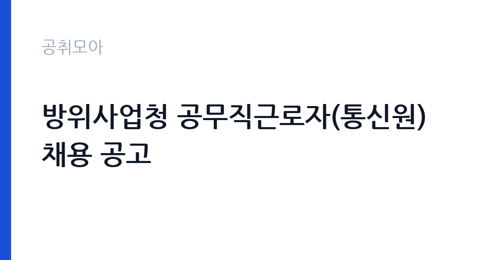

[국가기관] 방위사업청 공무직근로자(통신원) 채용 공고
방위사업청 · 경기 · 마감 2026-10-20 (D-19) · 출처 나라일터

한눈에 보는 모집 조건
| 기관 | 방위사업청 |
|---|---|
| 공고명 | 방위사업청 공무직근로자(통신원) 채용 공고 |
| 고용형태 | 공무직 |
| 근무지 | 경기 |
| 게시일 | 2026-10-02 |
| 마감일 | 2026-10-20 (D-19) |
지원자격, 이렇게 읽으세요
- 공무직근로자(통신원) 1명
- 접수 ~2026-10-20 마감
- 세부 조건은 원문 공고문 확인
응시 자격요건으로 관련 자격증 소지 여부가 명시돼 있습니다. 통신과 정보통신, 무선통신 분야 자격증이 해당될 것으로 보이며, 정확한 인정 자격증 목록은 원문 공고문을 참고하셔야 합니다. 자격증이 없으면 지원 자체가 안 되는 조건일 수 있으니 공고문을 꼼꼼히 확인하셨습니다. 방위사업청 공무직 채용은 학력이나 연령 제한이 없는 경우가 많지만, 병역과 결격 사유 같은 공통 조건은 확인하셔야 합니다. 자세한 사항은 첨부된 공고문을 기준으로 준비하셨습니다.
이 공고의 포인트
이 공고의 포인트는 세 가지입니다. 첫째, 공무직 정년 보장입니다. 채용일부터 만 60세까지 근무할 수 있는 신분이라 장기 안정성이 있습니다. 둘째, 자격증 하나면 지원 가능합니다. 관련 자격증 소지자라면 학력과 경력 부담 없이 도전할 수 있습니다. 셋째, 등기우편 소인 기준 접수입니다. 마감일 소인분까지 유효하므로 방문이 어려운 지방 거주자도 막판에 지원할 수 있습니다. 방위사업 분야라 보안 요건이 있을 수 있으니 이 점도 염두에 두셨습니다.
전형은 어떻게 진행되나
전형은 서류 심사와 면접으로 진행될 것으로 보이며, 정확한 전형 단계는 원문 공고문에서 확인하셔야 합니다. 응시 방법은 우편(등기) 접수이며 빠른 등기로 보내 마감일 소인까지 유효합니다. 통신원 직무는 실무 자격과 보안 적격성이 중요하므로, 서류에서는 자격증 취득 경위와 관련 경험을 정리하셨습니다. 면접에서는 통신 장비 운용 경험과 교대 근무 가능 여부, 보안 준수 의지가 확인될 수 있습니다.
원문에서 확인한 전형 방식
○ 모집분야 : 통신원 ○ 선발직급 : 공무직근로자 ○ 응시자격요건 : 관련 자격증 소지 여부 ○ 접수기간 : 2026년 10월 16일 ~ 10월 20일 ○ 응시방법 : 우편(등기) 접수 * 접수 마감일 소인분(빠른 등기)까지 유효 ○ 문의처 : 02-2079-6054 자세한 사항은 아래 공고문을 참고하시기 바랍니다.
이런 분께 추천해요
- 통신이나 정보통신, 무선통신 관련 자격증을 보유하신 분
- 과천과 수도권 근무가 가능하신 분
- 정년까지 안정적으로 근무할 직장을 찾으시는 분
지원 전 체크리스트
- 인정되는 관련 자격증 목록을 원문 공고문에서 확인하셨습니다
- 자격증 사본과 경력 서류를 미리 준비하셨습니다
- 등기우편 발송 일정을 접수 마감일 10월 20일에 맞추셨습니다
- 빠른 등기 이용과 소인 보관을 준비하셨습니다
모집 일정과 제출 타이밍
접수 기간은 2026년 10월 16일부터 10월 20일까지입니다. 우편 접수만 가능하며 마감일 소인분까지 유효하므로, 10월 20일 당일 발송분도 인정됩니다. 다만 우체국 마감 시간을 넘기면 소인이 다음 날로 찍힐 수 있으니 당일 발송은 오전 중에 마치시기 바랍니다. 빠른 등기를 이용하시고 등기 영수증은 합격 발표 때까지 보관하셨습니다.
직무 이해하기: 국가기관
통신원은 기관의 통신망과 교환 업무를 담당하는 실무직입니다. 전화 교환과 무전 통신, 통신 장비 운용과 점검, 통신 보안 유지가 주요 업무가 됩니다. 방위사업청은 방위력 개선과 방산 육성을 총괄하는 기관이라 통신 보안 요건이 엄격한 편입니다. 정시 출퇴근의 주 5일, 1일 8시간 근무가 일반적이며, 근무지는 경기도 과천시 관문로 방위사업청사입니다. 통신 장애 발생 시 신속한 대응과 보고 체계 준수가 중요한 직무입니다.
자기소개서 작성 팁
자기소개서는 자격증 취득 과정과 실무 경험을 중심으로 쓰셨습니다. 어떤 통신 장비를 다뤄봤고 어떤 상황에서 문제를 해결했는지를 구체적으로 적으시면 좋습니다. 군 복무 중 통신병 경험이 있으시다면 관련 경력으로 연결하셨습니다. 방위사업청이라는 기관 특성을 고려해 보안 의식과 규율 준수 경험을 언급하시는 것도 도움이 됩니다. 공무직으로서 장기 근무 의지를 밝히시는 것이 좋습니다.
면접 준비 포인트
면접에서는 통신 실무 지식과 보안 의식을 묻습니다. 사용해본 교환기와 통신 장비, 장애 대응 경험을 설명할 준비를 하셨습니다. 방산 기관 근무에 따른 보안 서약과 신원 조회 같은 절차에 대한 수용 의사도 확인될 수 있습니다. 교대 근무나 비상 대기 가능 여부를 묻는다면 솔직하게 답변하셨습니다. 과천 근무지와 출퇴근 계획에 대한 질문도 나올 수 있으니 미리 정리해 두셨습니다.
급여·근무조건 읽는 법
보수는 공무직 임금체계가 적용되며 계약 시 확정됩니다. 참고로 방위사업청 공무직 채용공고 예시에서는 연봉 약 2,400만원 수준으로 안내된 바 있습니다(방위사업청 공무직 채용공고 예시 기준). 이번 통신원 채용의 실제 연봉액은 계약 시 확정되므로 원문 공고문에서 확인하셔야 하며, 기본급 외에 수당과 상여, 4대 보험 적용 여부는 담당 부서(02-2079-6054)를 통해 확인하시기 바랍니다. 공무직은 정년이 보장되는 대신 공무원과 임금체계가 다르다는 점을 이해하고 지원하셨습니다.
자주 묻는 질문
- 공무직은 정년이 보장되나요
공무직근로자는 무기계약 신분으로 채용일부터 만 60세까지 근무할 수 있습니다. 방위사업청 공고 예시에도 계약기간이 채용일부터 만 60세까지로 안내된 바 있습니다. 정년까지 안정적으로 근무할 수 있다는 점이 공무직의 가장 큰 장점입니다. - 어떤 자격증이 필요한가요
통신과 정보통신, 무선통신 분야 자격증이 해당될 것으로 보입니다. 정확한 인정 자격증 목록과 등급 기준은 원문 공고문에서 확인하셔야 합니다. 자격증 미소지자는 지원이 제한될 수 있으니 공고문을 꼼꼼히 읽으시기 바랍니다. - 우편 접수는 어떻게 하나요
우편(등기) 접수만 가능하며 빠른 등기로 보내시는 것이 좋습니다. 접수 마감일 소인분까지 유효하므로 마감일 당일 발송분도 인정되지만, 우체국 마감 시간을 넘기지 않도록 오전 중에 발송하시기 바랍니다.
함께 보면 좋은 공고
[국가기관] 국립한밭대학교 국가공무원[시설9급] 전입희망자 모집 재공고 — 마감 2026-10-14[국가기관] 새만금개발청 일반임기제 공무원(행정6급, 투자유치B) 경력경쟁채용시험 재공고 — 마감 2026-10-12[국가기관] 2026년 제3차 호남권질병대응센터 기간제 근로자 채용 공고 — 마감 2026-10-12출처: 나라일터 공개정보를 바탕으로 공취모아가 정리한 안내글입니다. 모집 조건·일정은 변경될 수 있으니 지원 전 반드시 원문 공고문을 확인하세요. 본 글은 정보 제공용이며 합격을 보장하지 않습니다.